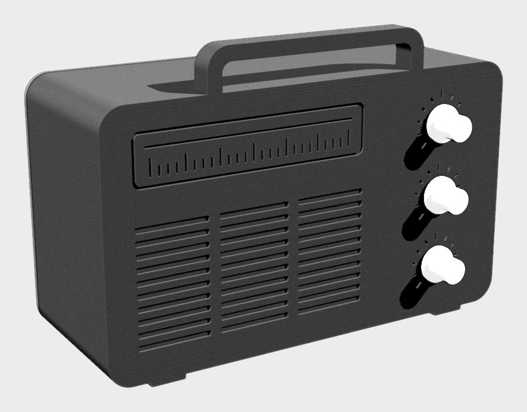

La Onda Diaria

Llega el electroestimulador que se viste de radio
El RADIO-555 genera impulsos cuadrados y triangulares, se maneja con tres perillas y cabe en cualquier repisa
Tiene asa, dial y rejilla, como los receptores que presiden las salas de estar; pero no sintoniza emisora alguna. El Electroestimulador RADIO-555, que hoy presentamos a nuestros lectores, guarda en su interior un generador de impulsos eléctricos de baja tensión, concebido para estudiar y demostrar las señales que emplea la electroestimulación.
Su manejo no pide más ciencia que la de girar una perilla. Tres mandos en columna regulan, por este orden, la rapidez de los impulsos, la proporción de tiempo que duran y la altura de la onda. Dentro de la caja, una pequeña placa de montaje aloja un oscilador 555 y un amplificador LM324, que entre los dos fabrican la señal.
El aparato se alimenta con 5 voltios y entrega su señal por la parte trasera, lista para ser observada en un osciloscopio. En las páginas interiores encontrará el lector las instrucciones de puesta en marcha, la explicación de lo que ocurre dentro del mueble y, en la página 3, una oferta que no conviene dejar pasar.
En esta edición
- Pág. 2. Conozca su aparato. Puesta en marcha en cinco pasos. Cómo funciona por dentro. Ficha técnica.
- Pág. 3. El consultorio del técnico. Clasificados. Gran oferta del Osciloscopio Arduino.
- Pág. 4. Cómo abrir el aparato. Cuidados. Pasatiempos.
Contenido de la caja
- Un Electroestimulador RADIO-555, montado y probado.
- Tres cables de salida: alimentación (+5 V), tierra (GND) y señal.
- Este manual.
Aviso importante
Aparato experimental y didáctico. No es un equipo médico ni está aislado para usarse sobre personas. No conecte la salida al cuerpo.
Anuncio · pág. 3
¿Y cómo se ve una onda?
Con el Osciloscopio Arduino, de obsequio para nuestros lectores.